Living Languages
Hindi, Tamil, Bengali, Marathi, Telugu, Punjabi and many more — each language carries its own poetry, proverbs and music.
भारत · A Digital Exploration of India's Cultural Heritage
Explore the traditions, stories, art, architecture and knowledge that have shaped India's diverse cultural identity across generations.
Our Heritage
India is not a single story — it is thousands of stories, told in many voices. Languages, traditional knowledge, art, music, dance, architecture, festivals, cuisine, clothing, crafts, customs and the ancient art of storytelling together form one of the world's oldest and most diverse living heritages.
Hindi, Tamil, Bengali, Marathi, Telugu, Punjabi and many more — each language carries its own poetry, proverbs and music.
Generations of wisdom — about herbs, seasons, stars and soil — passed down from elders to children.
From the dense lines of Madhubani to the graceful figures of Warli — India's visual memory, painted on walls, scrolls and cloth.
Ragas that follow the hours of the day, the great Carnatic and Hindustani traditions, and the folk songs of every region.
Ten classical forms and hundreds of folk traditions — from Bharatanatyam to Bihu, Garba to Ghoomar.
Temple gopurams, Mughal domes, jharokha balconies, stepwells and forts — stone written in the language of faith and craft.
A year-round calendar of celebration — from Bihu to Onam, Holi to Pongal — every season has its own colour and song.
A food culture as varied as its people — spiced curries of the north, banana-leaf feasts of the south, river fish of the east.
Kanjeevaram silks, Ajraks, the chikankari of Lucknow, the mekhela chador of Assam — cloth as cultural identity.
Handmade for millennia — embroidery, block printing, metalwork, pottery and weaving by skilled hands.
Marriage rites, harvest thanks, new-year greetings and monsoon rituals — the social grammar of Indian life.
The Ramayana, the Mahabharata, the Panchatantra, folk tales and puppet theatre — stories that shaped values across generations.
Traditions & Forms
Every region of India contributes its own chapter to a single, shared story. These are six of the chapters — each one deep enough to spend a lifetime in.
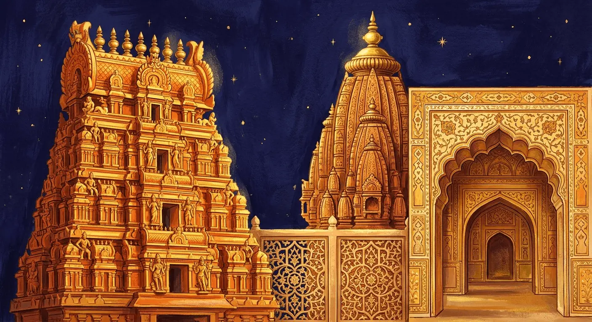
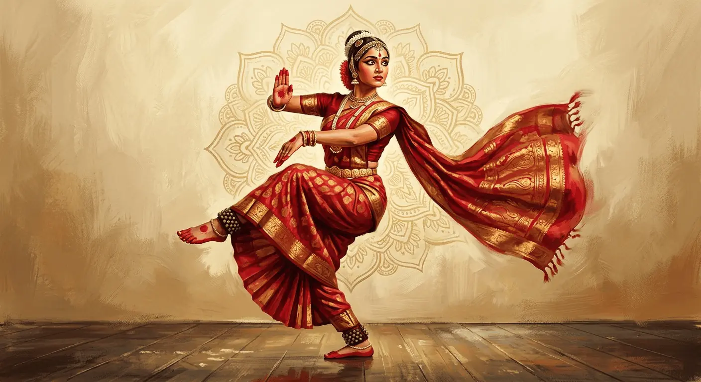
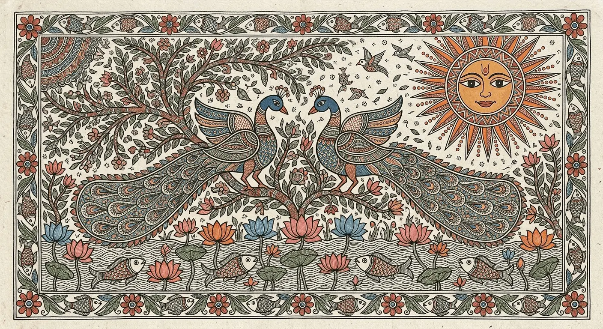
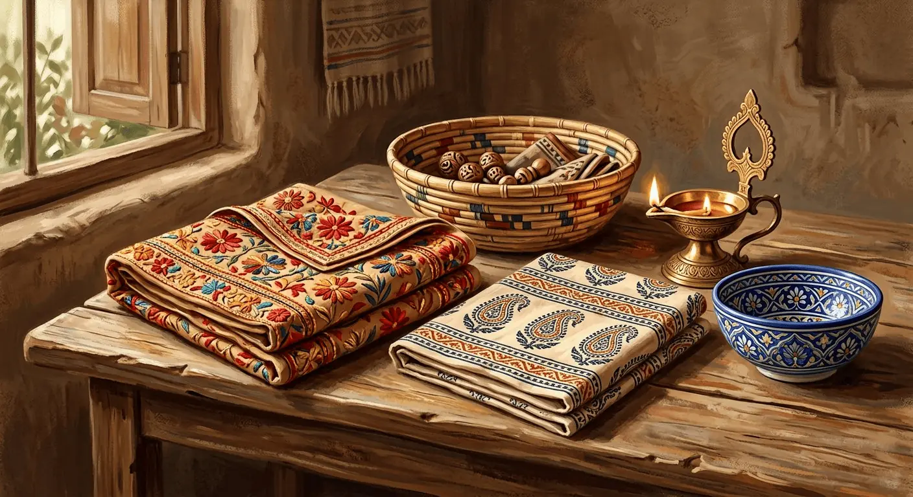
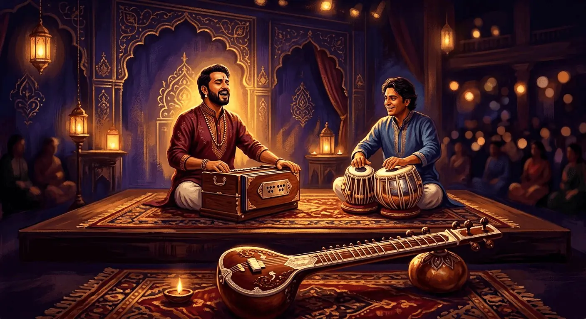
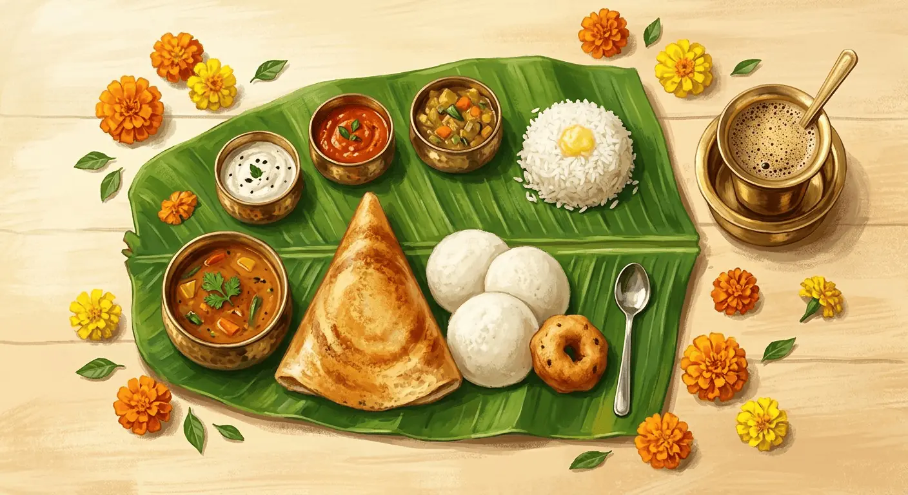
Cultural Heritage Map
One country, six cultural worlds. Choose a region on the map — or use the buttons — to discover its art, music, dance, cuisine, festivals and living knowledge.
A stylised cultural map of India, divided into six regions.
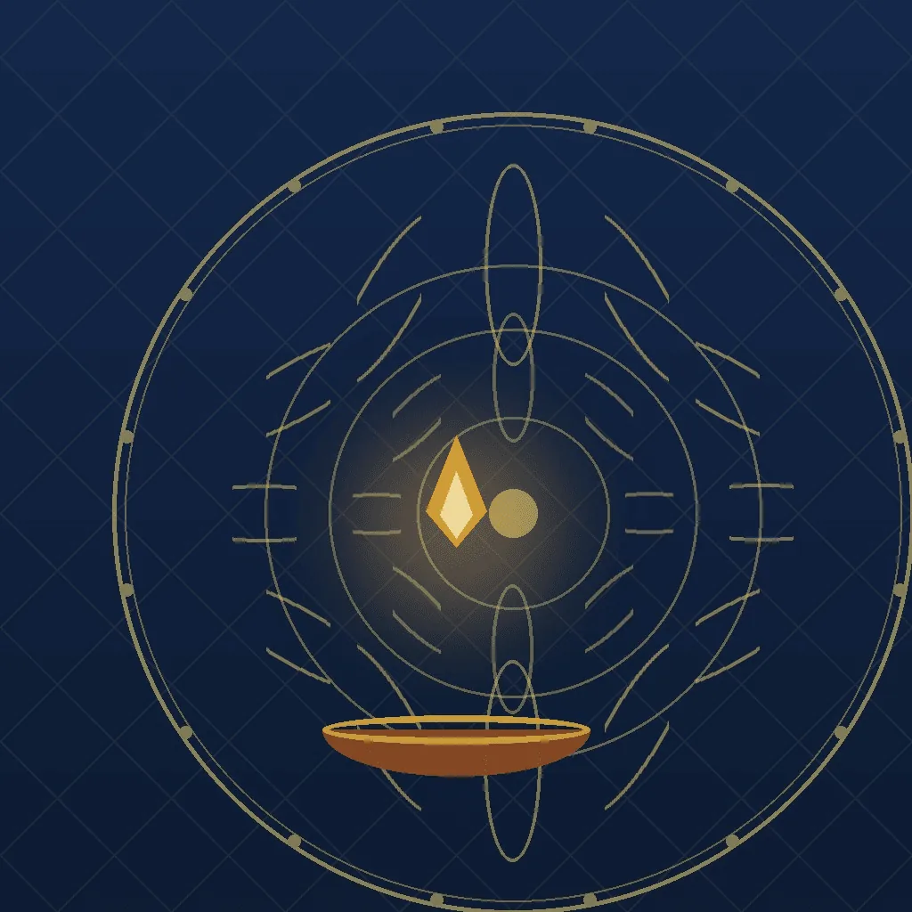
The heartland of classical music, dance and the great Mughal–Indic synthesis.
Traditional Knowledge
Long before libraries and laboratories, India's knowledge lived in hands, songs and seasons. These traditions are studied, documented and still practised today — as heritage, as science and as daily life.
One of the world's oldest systematic medical traditions, documented in classical texts. Its herbal and lifestyle knowledge continues to influence wellness practices today; any medical use should be guided by qualified professionals.
Posture, breath and meditation rooted in classical texts such as the Yoga Sutras — now practised across the world, both as exercise and as a contemplative discipline.
From khadi to Kanjeevaram, the loom, the shuttle and the pattern are knowledge — techniques of weave, tension and design carried through weaving communities for generations.
Puppet shows (kathputli), Nautanki street theatre, rama-kathas and village storytellers keep the epics and folk tales alive as living performance, not just old books.
Jali screens, courtyards, stepwells and careful orientation — a body of design wisdom that cools, shelters and gathers water without a single switch.
Forest patches protected as sacred by tribal and village communities — living libraries of biodiversity that have often survived for centuries because nobody cut the trees.
Fermentation, spice blending, seasonal eating and preservation — a thousand-year-old applied science of flavour, health and storage, different in every region.
Heirloom rice and millet varieties, intercropping, and the rhythm of monsoon and rabi seasons — an agricultural calendar refined over countless harvests.
Stepwells, tanks, johads and rainwater harvesting systems that kept cities and villages watered long before modern engineering arrived.
Art & Crafts
Every craft carries the memory of the people who make it. Walk through this gallery of eight living Indian crafts — each one a bridge between the past and the present.
Mithila paintings in fine lines and natural colours — traditionally made by women on fresh walls for weddings and festivals.
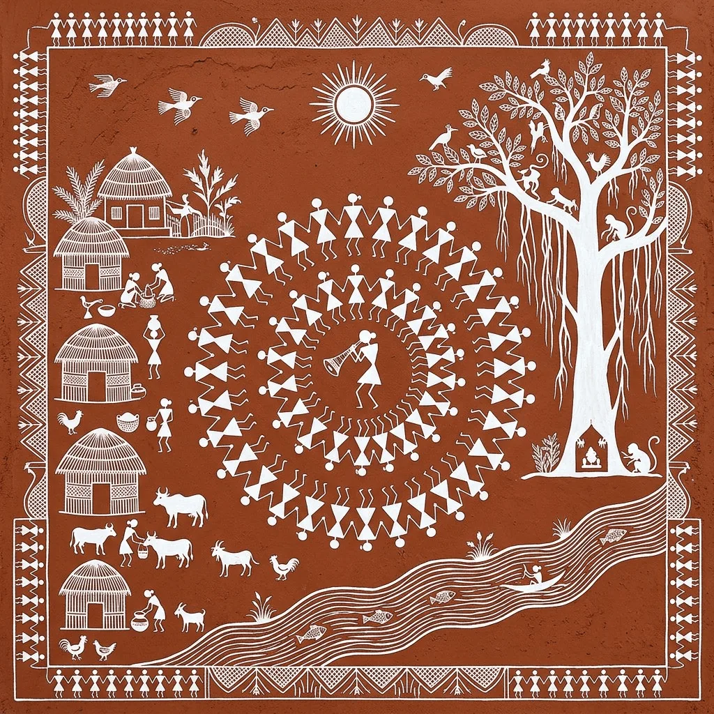
Tribal paintings in white rice paste on earth-toned walls — circles of dance, banyan trees, sun and river.
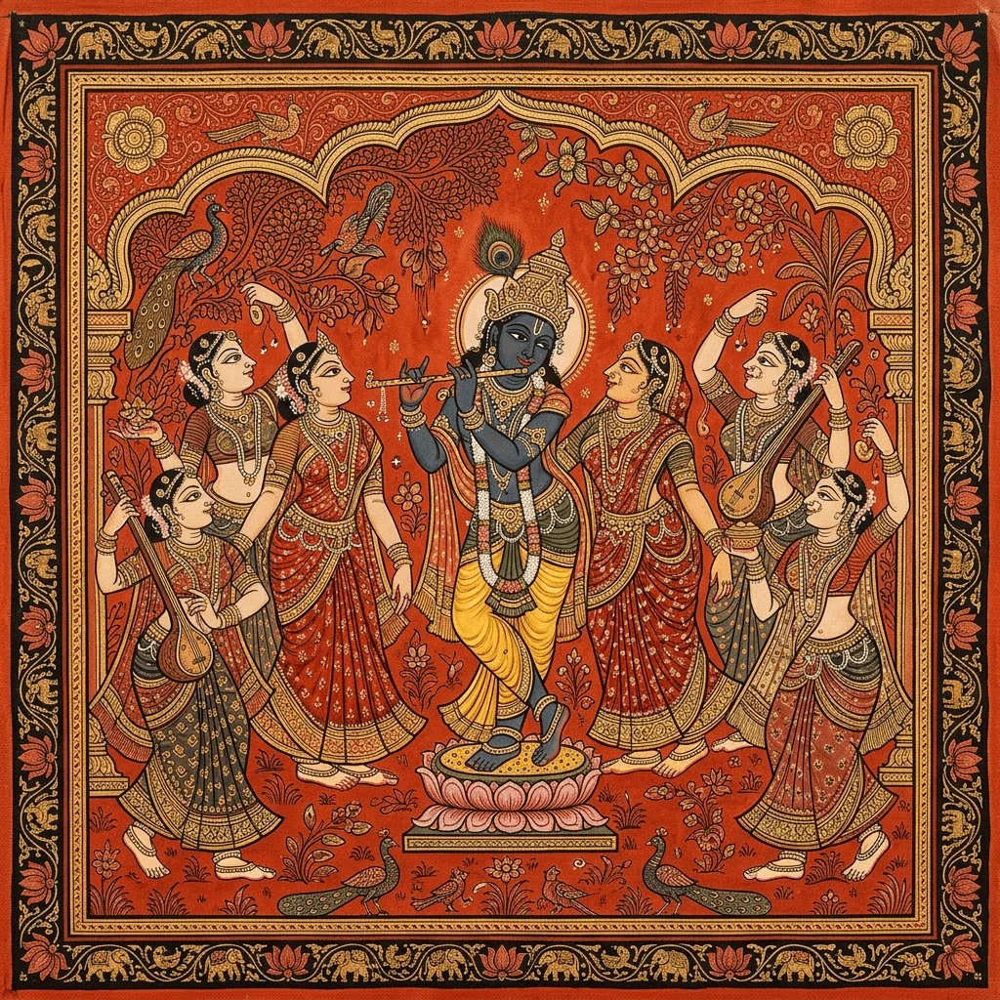
Scroll paintings of mythological scenes in fine line and bold colour, a tradition that stretches back centuries.
"Pen paintings" on cloth with natural dyes like indigo and myrobalan, once used to dress temple deities.
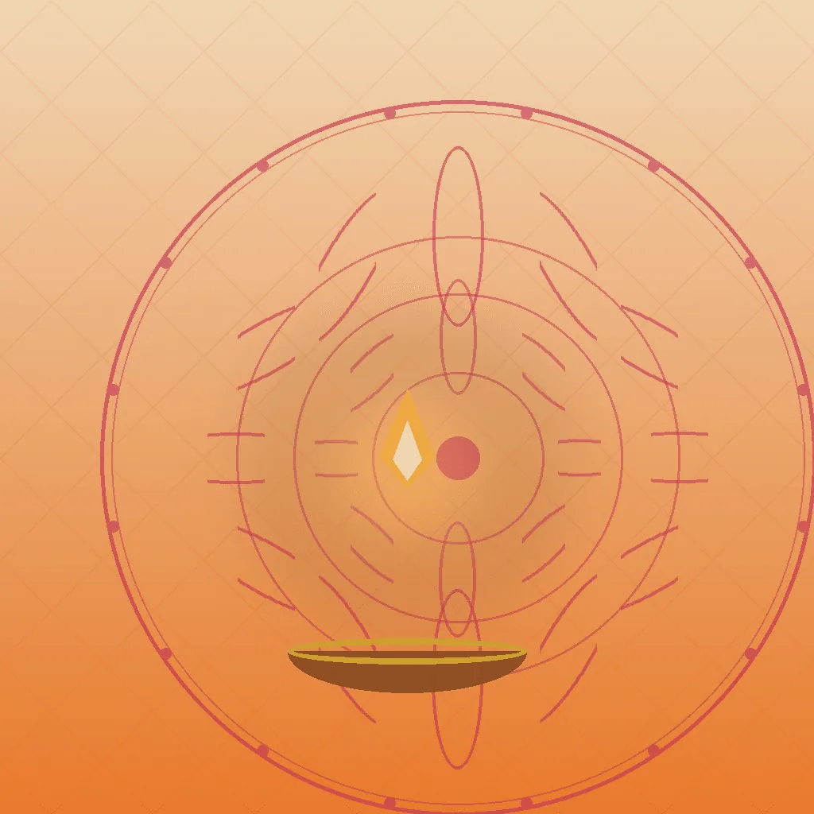
"Flower work" — shawls and dupattas stitched in bright thread over khadi, the signature of the Punjabi bride.
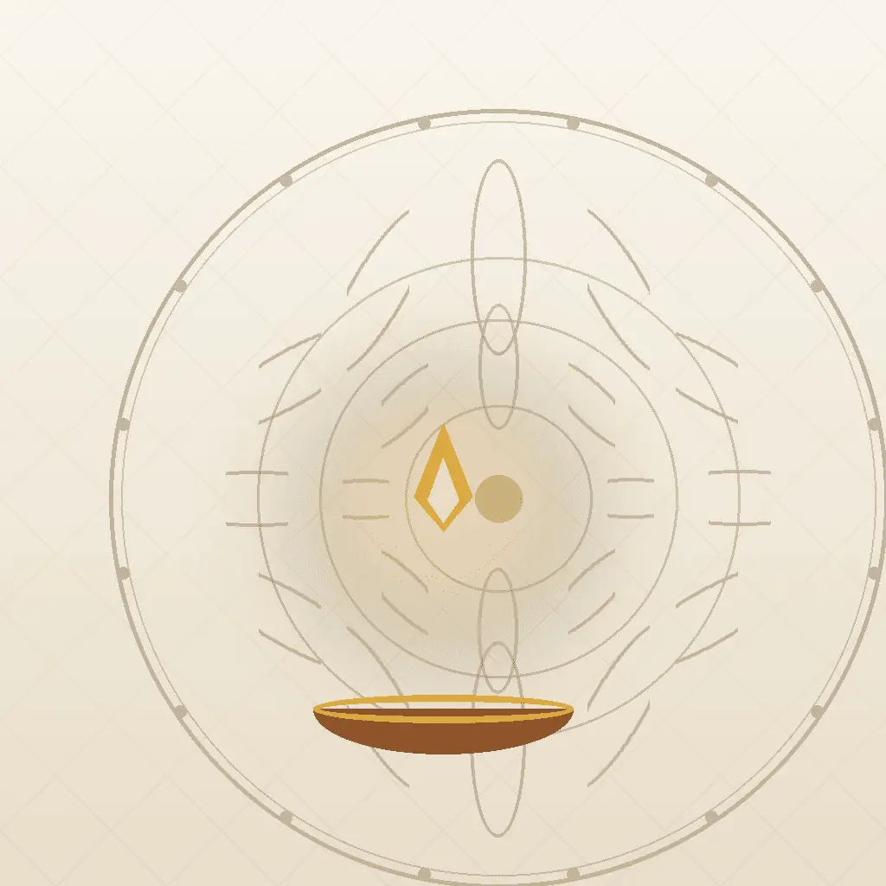
Delicate white-on-white embroidery with dozens of named stitches, made in Lucknow for centuries.
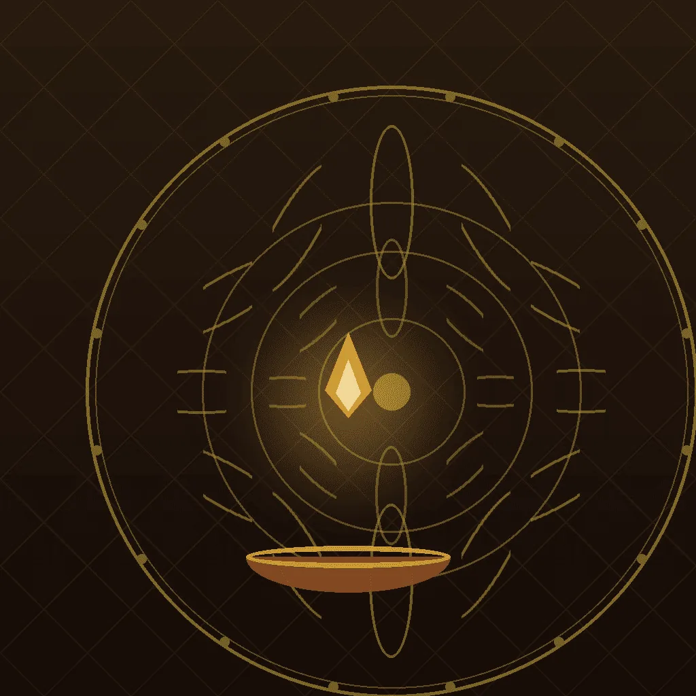
Ancient lost-wax metal casting of dancers, birds and deities, still practised by tribal craft communities.
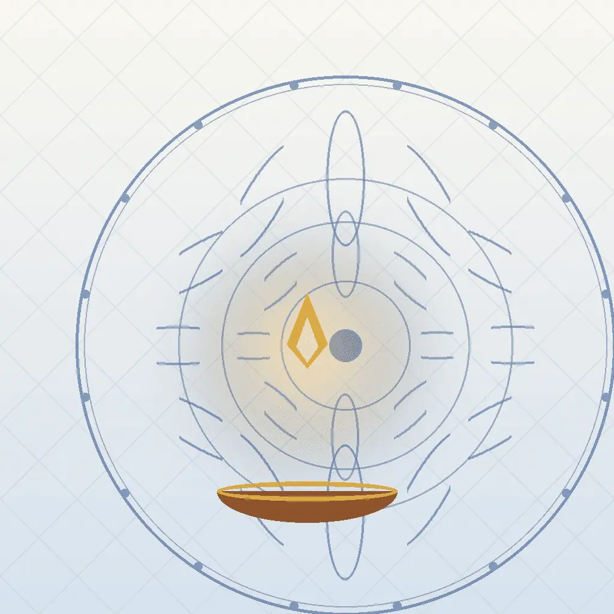
Cobalt-blue patterns on white ceramic, carried to India along ancient trade routes and reimagined by local artisans.
Festival Explorer
A thousand festivals, one shared calendar of joy. Choose a festival to see how India celebrates — with respect for the many ways it is lived.
📍 Celebrated across India, with regional names and customs
Digital Preservation
A proposed digital platform can make cultural information discoverable, interactive, educational and accessible online — so that younger audiences can explore their heritage the way they explore everything else: on their own devices, at their own pace, and with their own curiosity.
Explore India's cultural diversity — region by region, tradition by tradition — in one place.
Understand the stories behind the traditions — who created them, why, and how they live today.
Help keep cultural knowledge documented, accessible and alive for the generations that follow.
Student Innovation · Smart India Hackathon
BHARAT is a working innovation prototype — a centralized, interactive cultural heritage platform built by students, combining a regional explorer, a story museum, interactive learning and an AI-assisted guide.
Working prototype · proposed digital solutionA digital interface for exploring India's heritage by region and category — six regions, ten cultural dimensions each, no page reloads.
A heritage AI assistant that answers questions about Indian culture — connected through a secure API endpoint, with a fully offline demo mode for presentations.
Quizzes, cultural stories and a visual timeline designed to make heritage learning engaging for students — not a lecture, but an experience.
Interactive Learning
Ten questions across art, architecture, dance, music, festivals, crafts and regional culture. Give it a try.
A Cultural Journey
A simplified map of a very deep history. India's past is not a single line — it is many lines at once — but these broad moments help orient the journey.
Among the world's earliest urban cultures — planned cities, drainage, the Great Bath, seals with an undeciphered script, and centres like Harappa, Mohenjo-daro and Lothal.
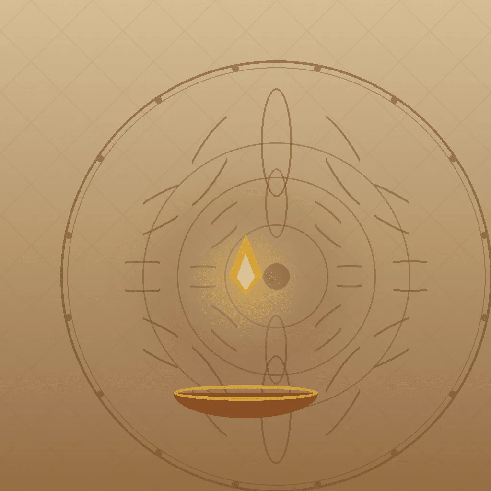
The Vedic hymns and Upanishads take shape; early republics (gana-sanghas) experiment with collective governance; Buddhism and Jainism arise, and the roots of classical music and philosophy are laid.
Ashoka's edicts are carved in stone; the great stupa at Sanchi rises; and the Natya Shastra codifies the arts of dance and drama. The later Gupta age is often called India's first "classical age."
Temple building flourishes across the subcontinent — the Nagara spires of the north (Khajuraho, Bishnupur) and the Dravidian gopurams of the east and south (Konark, Brihadeeswarar).
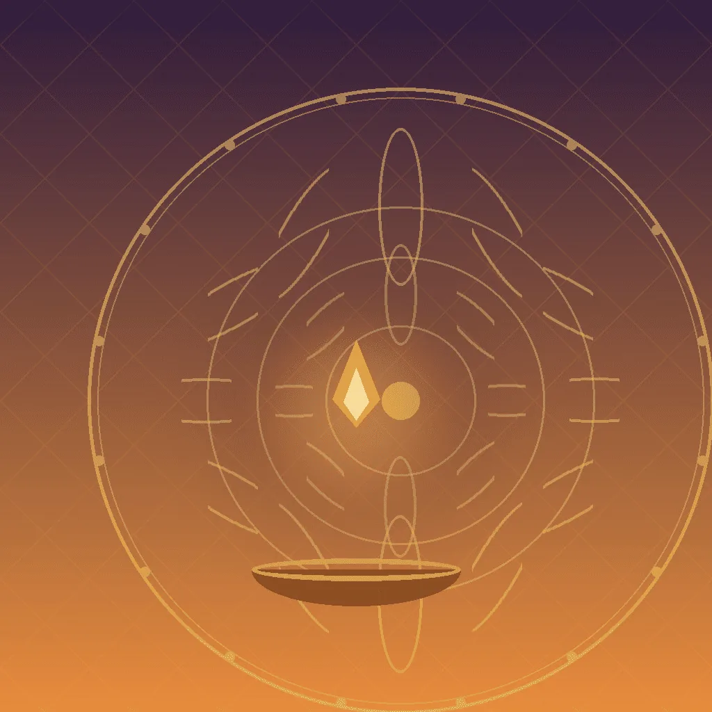
The Taj Mahal, Mughal gardens and miniature painting flourish, while the Bhakti and Sufi movements weave new music, poetry and a shared cultural language across communities.
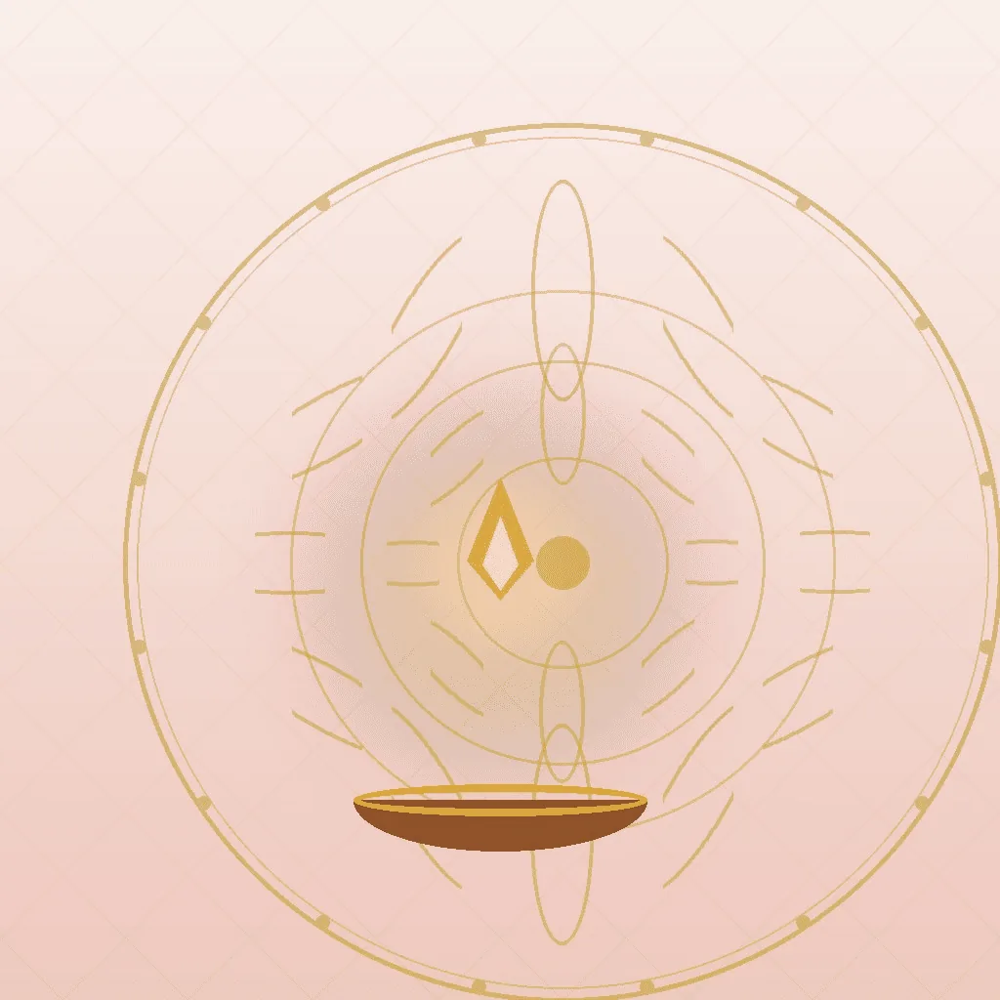
The colonial era brings museums and the systematic documentation of monuments — and a generation of artists, scholars and freedom fighters who work to protect heritage from neglect and looting.
Today India counts more than 40 UNESCO World Heritage Sites. National monuments missions and digital initiatives — like the one presented here — open heritage to a whole new generation of explorers.
About This Project
India's heritage is vast, but young people often lack engaging, interactive ways to explore it.
Art, music, dance, architecture, festivals, crafts and knowledge — the true subject of this platform.
Modern web technology that keeps cultural information discoverable and accessible online.
Region-by-region exploration, a story museum and a festival explorer — learning by wandering.
Built by a student team for the Smart India Hackathon — a working prototype, not a finished product.
A heritage AI assistant that helps — never replaces — human curation and cultural depth.
India's cultural heritage is extremely diverse, but younger generations may not have engaging and interactive ways to discover, understand and digitally explore traditional knowledge, art, crafts, festivals, architecture and cultural practices. BHARAT is a proposed digital solution: a centralized, interactive cultural heritage platform that uses modern web technology to make India's diverse heritage accessible, engaging and educational. This website is a working innovation prototype — we do not claim that the problem is solved at national scale; we are building the first step.
🇮🇳 Preserve the Past. Explore the Present. Inspire the Future.